Generated 2026-06-13T18:48:56.794Z for Prompt Life v0.28.1.
This packet lets reviewers inspect all 39 Journey visual aids without clicking through the app. It includes each card's 390px screenshot, 320px overflow check where captured, template, concept, misconception, caption/callouts, score, priority, and tester note.
39visual aids scored
18P0/P1 before
0P0/P1 after
6templates used
Six Canonical Templates
Template
Purpose
Allowed
Not allowed
Atmospheric Scene
Big-picture, humane, social, ethical, or metaphorical concepts.
Image 2 atmospheric PNG; textless image; HTML caption/callouts outside the image
exact mechanics; required arrows; axes; probabilities; small labels
Mechanism Flow
A process unfolding over steps.
coded SVG/HTML; 3-5 numbered steps; clear arrows or rails; one action per step
Overfitting vs Generalization (Overfitting and Generalization, 28/35): Validation markers must remain readable at 320px.
Text to Tokens (Tokenization, 30/35): Long token rows must wrap without horizontal overflow.
MLP Feature Workshop (MLP, 30/35): Avoid adding feature names to the bars.
Transformer Stack (Layers, 30/35): Keep block text short; no layer-by-layer story.
Hidden State Flow (Hidden States, 30/35): Keep embedding and hidden-state labels visibly distinct.
Alignment Landscape (Alignment, 31/35): Avoid morality imagery that makes the model seem conscious.
Borrowed Flames (Collective Intelligence, Extracted, 31/35): Later atmospheric image could improve warmth, but current coded flow is readable.
Cost Ledger (Costs We Must Count, 31/35): Later atmospheric image could improve tone; no numbers should be added.
All Journey Visual Aids
Stage 1: Before Morning1. What Is an LLM?Atmospheric Scene · 34/35 · P3 keep · keep
390px: Prompt to Prediction
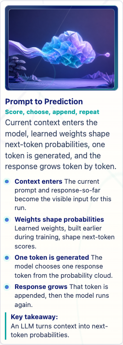
320px overflow spot-check
Atmospheric hero supports the opening idea; exact mechanics are carried by HTML callouts.
Learning objective
Recognize an LLM as a learned next-token prediction system rather than a mind, database, or rulebook.
One concept
Context enters, learned weights shape probabilities, and one response token is generated.
Misconception corrected
An LLM is a conscious reader or live database.
Caption/callouts
Current context enters the model. Learned weights shape next-token probabilities. One token is generated and appended. Ordinary inference does not rewrite weights.
Allowed in-visual labels
None; keep text in HTML.
Alt text
A prompt entering a glowing folded-paper feature cloud before one response token emerges.
Tester note
Ask whether the opening visual reduces mystery without implying hidden powers.
Stage 1: Before Morning2. Where LLMs FitTaxonomy Map · 34/35 · P3 keep · keep
390px: AI Family Tree
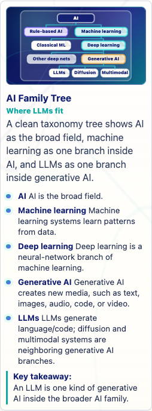
320px overflow spot-check
Readable taxonomy; keep definitions below rather than adding dense labels.
Learning objective
Place LLMs inside AI, machine learning, deep learning, and generative AI without treating those terms as synonyms.
One concept
LLMs are one branch inside a larger AI family.
Misconception corrected
All AI is an LLM, or all generative AI works like ChatGPT.
Caption/callouts
AI is the broad field. Machine learning learns patterns from data. Generative AI creates media. LLMs are a language/code branch.
Allowed in-visual labels
AI, Machine learning, Deep learning, Generative AI, LLMs
Alt text
A compact AI family tree showing LLMs as one branch of generative AI.
Tester note
Ask whether the map prevents using AI, ML, generative AI, and LLM interchangeably.
Stage 1: Before Morning3. Rationalists vs EmpiricistsComparison Board · 33/35 · P3 keep · keep
390px: Rules and Learned Patterns
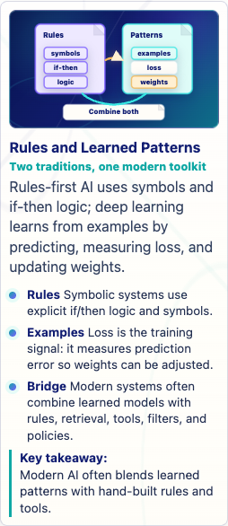
320px overflow spot-check
Comparison is clear; loss is supported by glossary and callout.
Learning objective
Compare rules-first systems with learned-pattern systems and hybrids.
One concept
Explicit rules and learned examples are different traditions that modern systems may combine.
Misconception corrected
Deep learning is just a giant hand-written rulebook.
Caption/callouts
Rules use explicit if/then logic. Learned systems use examples, loss, and weights. Modern tools often combine methods.
Allowed in-visual labels
Rules, Examples, Loss, Weights, Hybrid
Alt text
Two panels compare rule-based AI with learned-pattern systems and a hybrid bridge.
Tester note
Watch whether learners understand loss as a training signal.
Rebuilt from generated metaphor into a coded comparison board separating durable adaptation from current-run steering.
Learning objective
Separate durable fine-tuning or adapters from prompt, RAG, and sampling behavior during one run.
One concept
Fine-tuning can shape future behavior; prompt/RAG/sampling steer the current run.
Misconception corrected
Prompting once is the same as fine-tuning.
Caption/callouts
Fine-tuning can durably adapt future behavior. Prompting steers this run. RAG adds temporary context. Sampling still happens during inference.
Allowed in-visual labels
Fine-tune, Prompt, RAG, Sampling
Alt text
A four-column comparison board separates fine-tuning from prompt steering, RAG context, and sampling.
Tester note
Ask whether durable/current-run boundary is clear after five seconds.
Stage 1: Before Morning8. AlignmentAtmospheric Scene · 31/35 · P3 keep · keep
390px: Alignment Landscape
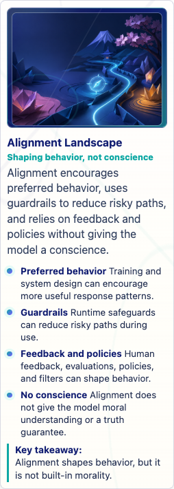
320px overflow spot-check
Textless metaphor is suitable; conscience boundary is in callouts.
Learning objective
Explain alignment as behavior shaping, feedback, policy, and guardrails, not conscience.
One concept
Alignment changes behavior patterns or system controls without giving moral understanding.
Misconception corrected
Alignment gives the model a conscience.
Caption/callouts
Preferred behavior can be encouraged. Guardrails and policies shape outputs. Feedback can guide training or evaluation. The model does not gain conscience.
Allowed in-visual labels
None; keep text in HTML.
Alt text
A folded garden landscape representing behavior shaping and safer paths without text.
Tester note
Ask whether the visual feels like behavior shaping rather than moral awakening.
v0.27.18 rebuild is readable; watch arc endpoints on 320px.
Learning objective
Explain attention as weighted relevance between token positions, not awareness.
One concept
The target token uses one source clue more strongly than another.
Misconception corrected
Attention means human attention or consciousness.
Caption/callouts
"it" is the token being updated. "cat" fits the local sentence relationship. Attention changes relevance weights. Attention is calculation, not awareness.
Allowed in-visual labels
Target token, Stronger clue, Weaker clue
Alt text
Sentence chips show it connected strongly to cat and weakly to dog by relevance arcs.
Tester note
Ask whether not-awareness is clear without clutter.
Explain sampling as choosing one next token from probability-shaped options.
One concept
One token is selected from a probability distribution.
Misconception corrected
The most likely token is guaranteed true or always selected.
Caption/callouts
Probabilities shape options. Sampling selects one token. Less likely tokens can still appear. Likely is not proof.
Allowed in-visual labels
floor, mat, kitchen, banana, chosen
Alt text
Probability bars lead to one selected next-token card.
Tester note
Ask whether likely-not-true lands.
Stage 5: The Day Repeats23. AutoregressionMechanism Flow · 33/35 · P3 keep · keep
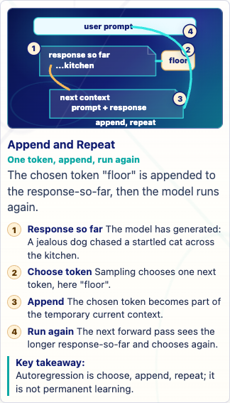
390px: Append and Repeat
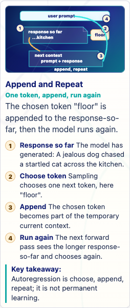
320px overflow spot-check
Numbered repeat cycle is readable.
Learning objective
Trace autoregressive generation as choose one token, append it, and run again.
One concept
Generation repeats one token at a time.
Misconception corrected
The model writes the whole answer in one hidden burst.
Caption/callouts
Response so far is visible context. One token is chosen. That token is appended. The model runs again.
Allowed in-visual labels
Response so far, Choose token, Append, Run again
Alt text
A four-step loop shows one token chosen, appended, and fed into the next run.
Tester note
Ask whether append-repeat is clear.
Stage 5: The Day Repeats24. Context WindowContext Tray / Stack · 34/35 · P3 keep · keep
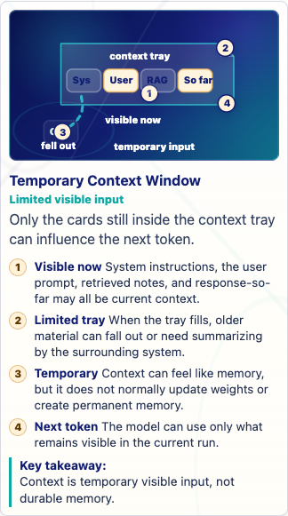
390px: Temporary Context Window
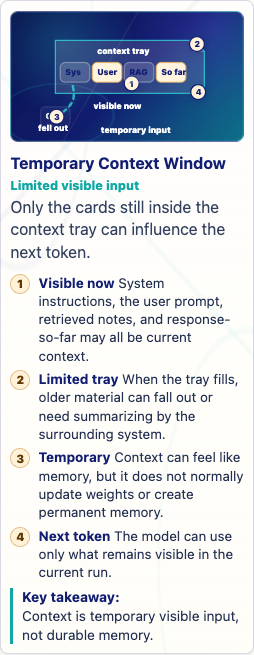
320px overflow spot-check
Bounded tray is clear.
Learning objective
Explain context window as temporary visible input, not permanent memory.
One concept
Only visible context is available; old context can fall out.
Misconception corrected
Context window is permanent memory.
Caption/callouts
Visible context is temporary. Capacity is limited. Old content can fall out. The next run uses what remains visible.
Allowed in-visual labels
Visible now, Capacity, Falls out, Next run
Alt text
A bounded context tray shows cards inside, capacity, and older cards falling out.
Tester note
Ask whether context versus memory is repaired.
Stage 5: The Day Repeats25. RAG and RetrievalContext Tray / Stack · 34/35 · P3 keep · keep
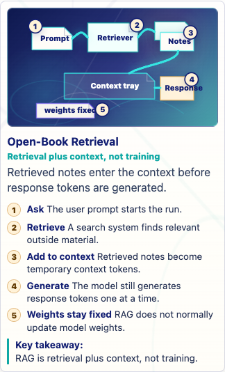
390px: Open-Book Retrieval
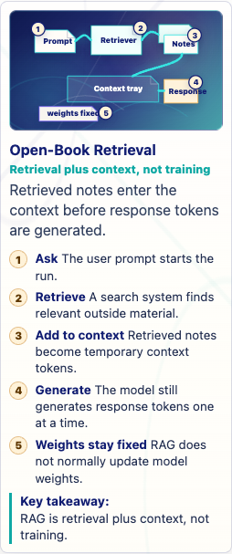
320px overflow spot-check
Open-book retrieval flow is clear and numbered.
Learning objective
Explain RAG as retrieval plus temporary context, not training or permanent memory.
One concept
Retrieved snippets are inserted into current context before generation.
Misconception corrected
RAG means the model permanently learned the documents or searched by itself.
Caption/callouts
User prompt starts the search step. Retriever finds relevant notes. Retrieved notes enter context. Response is still generated token by token. Weights stay fixed.
Allowed in-visual labels
Prompt, Retriever, Notes, Context tray, Response
Alt text
A prompt sends a retriever to notes, then retrieved cards enter a context tray before response generation.
Tester note
Ask whether RAG is not training.
Stage 5: The Day Repeats26. GroundingContext Tray / Stack · 32/35 · P3 keep · keep
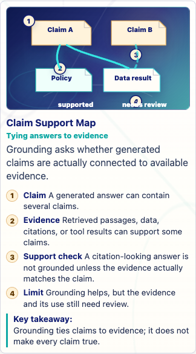
390px: Claim Support Map
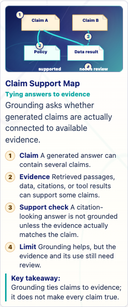
320px overflow spot-check
Claim-to-evidence support map is readable.
Learning objective
Explain grounding as connecting claims to available evidence without guaranteeing truth.
One concept
A claim is stronger when it is supported by matching evidence.
Misconception corrected
A citation-looking answer is automatically true.
Caption/callouts
Generated answers contain claims. Evidence can support claims. The support must actually match. Review still matters.
Allowed in-visual labels
Claim, Evidence, Support check, Review
Alt text
Generated claims connect to evidence cards, with one missing support line marked for review.
Tester note
Ask whether grounding is helpful but not a truth guarantee.
Stage 5: The Day Repeats27. HallucinationsComparison Board · 32/35 · P3 keep · keep
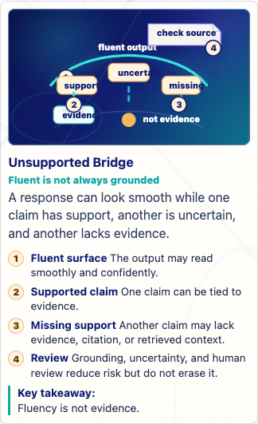
390px: Unsupported Bridge
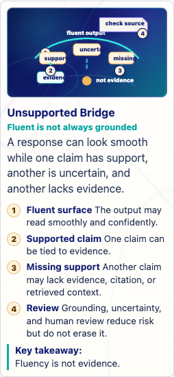
320px overflow spot-check
Support/missing-support metaphor is testable.
Learning objective
Explain hallucination as fluent generated output outrunning support, not intentional lying.
One concept
Fluent output can contain claims with weak or missing support.
Misconception corrected
A hallucination means the model is lying on purpose.
Caption/callouts
The output can read smoothly. Some claims may be supported. Some claims may lack support. Review reduces risk.
Allowed in-visual labels
Fluent output, Supported, Missing support, Review
Alt text
A smooth output bridge has one supported claim and one unsupported span needing review.
Tester note
Ask whether hallucination differs from lying.
Stage 6: Twilight: The Wider Landscape28. How AI LearnsComparison Board · 32/35 · P3 keep · fixed
390px: Learning Modes Matrix
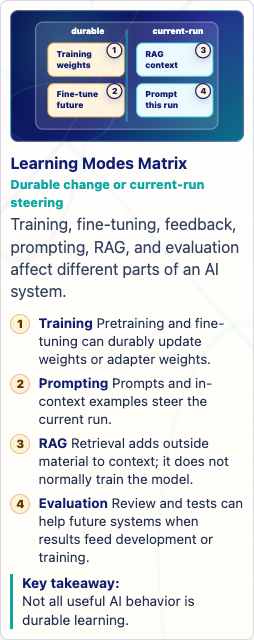
320px overflow spot-check
Simplified from dense matrix into four mode cards: training, fine-tune, RAG, and prompt.
Learning objective
Compare durable learning, current-run steering, retrieval, and evaluation without treating all useful behavior as training.
One concept
Different system changes happen at different times and places.
Misconception corrected
Every useful answer means the model learned permanently.
Caption/callouts
Training/fine-tuning can update weights. Prompting steers current context. RAG retrieves temporary context. Evaluation may inform future changes.
Allowed in-visual labels
Training, Fine-tune, RAG, Prompt
Alt text
Four mode cards compare durable training and fine-tuning with current-run RAG and prompting.
Tester note
Ask whether learners can say which modes change weights.
Stage 6: Twilight: The Wider Landscape29. Diffusion vs AutoregressionComparison Board · 32/35 · P3 keep · keep
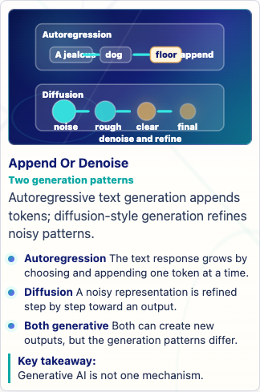
390px: Append Or Denoise
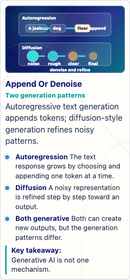
320px overflow spot-check
Two-lane contrast is clear.
Learning objective
Distinguish autoregressive token generation from diffusion-style denoising.
Reduced from many media inputs/outputs to three lanes flowing through shared representation and output.
Learning objective
Explain multimodal AI as systems that process or represent multiple media types together.
One concept
Text, image, and audio can connect through learned representations or linked components.
Misconception corrected
Multimodal means human-like perception.
Caption/callouts
Multiple media can enter. Systems encode media into usable representations. Outputs depend on the system. Processing is not human sensation.
Allowed in-visual labels
Text, Image, Audio, Shared space, Output
Alt text
Three media lanes for text, image, and audio connect through a shared representation area to an output.
Tester note
Ask whether it teaches multimodal without implying human senses.
Stage 6: Twilight: The Wider Landscape31. The Perfect StormTaxonomy Map · 32/35 · P3 keep · fixed
390px: Storm Front
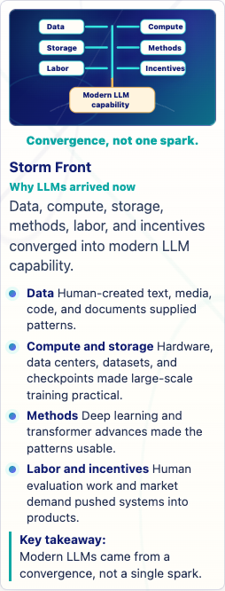
320px overflow spot-check
Convergence layout remains readable, with short ingredient labels and caption below the diagram.
Learning objective
Explain modern LLM capability as convergence, not one unexplained event.
One concept
Data, compute, storage, methods, labor, and incentives converged.
Misconception corrected
One spark or one algorithm explains modern LLMs.
Caption/callouts
Human-created data supplied patterns. Compute and storage made scale practical. Methods made patterns usable. Labor and incentives moved systems into products.
Separate practical mechanism-based risks from myths about consciousness, omniscience, or hidden model powers.
One concept
Real risks come from data, context, tools, and institutions.
Misconception corrected
Risk mainly means sci-fi doom or conscious chatbots.
Caption/callouts
Privacy, hallucination, tools, and overreliance are real mechanisms. Conscious bots and secret self-training are myths. Institutions shape prevention and review.
Allowed in-visual labels
Real mechanisms, Myths, Human accountability
Alt text
A two-column ledger sorts practical mechanism risks from unsupported myths.
Tester note
Ask whether risk feels practical rather than spooky.
Recentered human judgment and made review, appeal, and governance visible.
Learning objective
Keep dignity, judgment, governance, and accountability central in AI deployment.
One concept
AI output should support people inside accountable decision contexts.
Misconception corrected
If AI is powerful, it should decide.
Caption/callouts
People remain accountable. Dignity outranks speed or automation. The model can sound ethical without moral understanding.
Allowed in-visual labels
AI tool, Human judgment, People, Review, Appeal, Governance
Alt text
Human judgment sits at the center while an AI tool supports, people are affected, and review, appeal, and governance remain visible.
Tester note
Ask whether human responsibility is visually central.
Stage 8: New Dawn37. Better AI Is a ChoiceTaxonomy Map · 32/35 · P3 keep · fixed
390px: Better-AI Control Panel320px overflow spot-check
Reduced dense lever panel to data, evaluation, policy, human review, and incentives.
Learning objective
Show that outcomes are shaped by design, deployment, governance, and incentives.
One concept
Better AI depends on human choices about data, evaluation, policy, review, and incentives.
Misconception corrected
Harms are inevitable if the technology is useful.
Caption/callouts
Technical choices can fit the task. Data provenance and consent matter. Institutional review and evaluation shape outcomes.
Allowed in-visual labels
Data, Evaluation, Policy, Review, Incentives
Alt text
A compact better-AI lever panel shows data, evaluation, policy, human review, and incentives.
Tester note
Ask which lever group they remember after five seconds.
Stage 8: New Dawn38. Effective Prompting from Model LiteracyContext Tray / Stack · 33/35 · P3 keep · keep
390px: Context Tray320px overflow spot-check
Context-tray metaphor is strong and aligned with the Journey.
Learning objective
Show effective prompting as context design for one run, not permanent teaching.
One concept
Prompt parts are packed into the current context tray.
Misconception corrected
Prompting is special wording or fine-tuning.
Caption/callouts
Prompt parts shape current input. Evidence and uncertainty improve reviewability. Prompting usually changes context, not weights.
Allowed in-visual labels
Task, Context, Evidence, Format, Review
Alt text
Prompt component cards drop into a transparent current context tray before one generated response leaves it.
Tester note
Ask whether prompting feels temporary.
Stage 8: New Dawn39. Model Literate SynthesisTaxonomy Map · 31/35 · P3 keep · fixed
390px: Full Chain Map320px overflow spot-check
Split dense capstone map into three lanes: mechanics, evidence, and responsibility.
Learning objective
Connect mechanics, evidence, review, and human accountability into a durable mental model.
One concept
Mechanics matter, and humans remain responsible.
Misconception corrected
Fluency equals understanding or wisdom.
Caption/callouts
Prompt becomes tokens, states, scores, probabilities, and sampled response tokens. RAG and grounding can add evidence but not truth guarantees. Benefits, costs, review, governance, and accountability remain human responsibilities.
Allowed in-visual labels
Mechanics, Evidence, Responsibility
Alt text
A three-lane synthesis map groups model mechanics, evidence checking, and human responsibility.
Tester note
Ask what one idea they retain from the capstone visual.